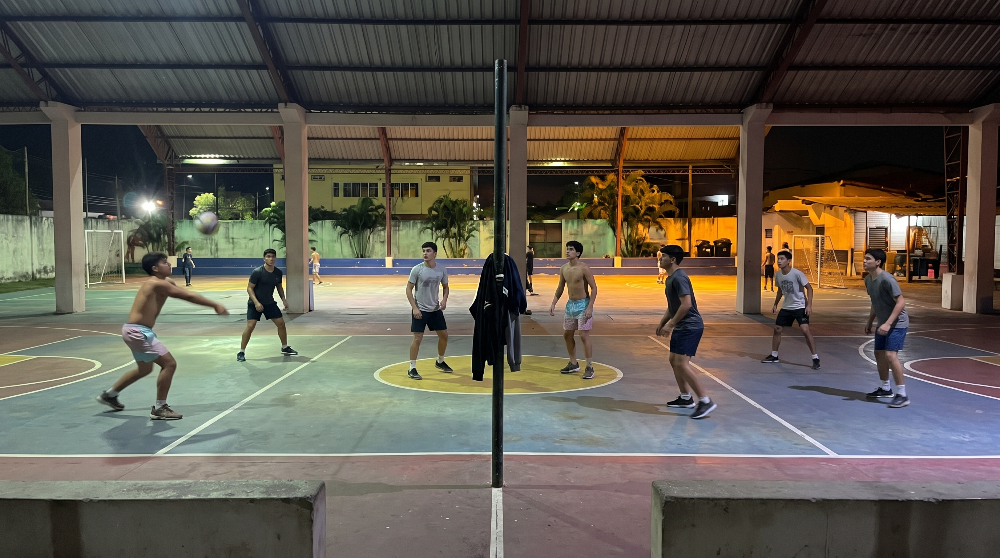

¿Cómo se organizan?
Sin árbitros ni inscripciones: los mismos jóvenes lo organizan todo
Los partidos de las 6 no dependen de ningún club ni de un entrenador. Son los propios jugadores quienes se ponen de acuerdo para llegar al coliseo, arman los equipos según quién está presente y deciden cómo se juega cada noche. Todo funciona gracias a la confianza y a la costumbre que el grupo ha construido con el tiempo.
Una jornada típica
-
La convocatoria
Durante la tarde alguien escribe en el grupo de WhatsApp y se confirma quiénes van a jugar ese día.
-
Llegada y armado de equipos
Desde las 6 van llegando los jugadores al coliseo y se forman los tríos según quién está presente.
-
Los partidos
Se juegan partidos rápidos y el equipo que gana se queda en la cancha para enfrentar al siguiente.
-
Cierre o minitorneo
La noche termina con un último partido o, algunos días, con un minitorneo organizado por el grupo.
Los grupos de WhatsApp
93% pertenece a uno o varios grupos. Se usan para:
- Acordar la hora
- Formar los equipos
- Decidir quién lleva balones
- Organizar minitorneos